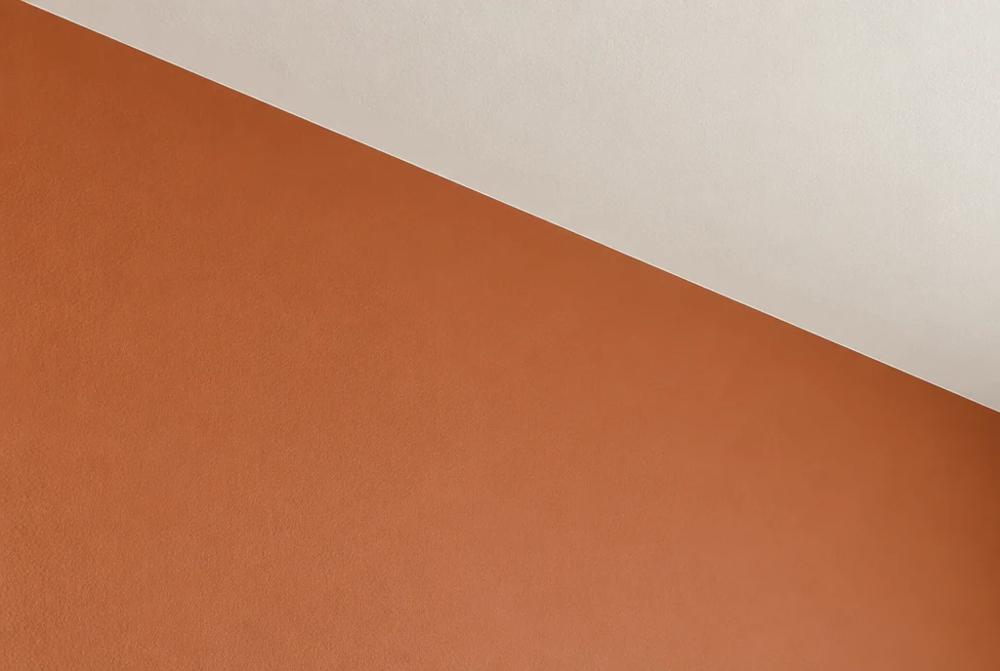
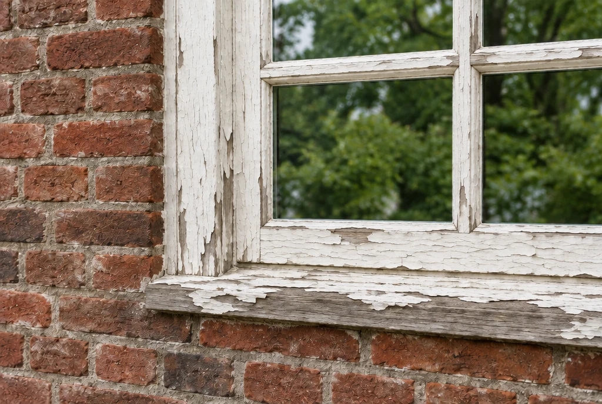

Binnen
Rustige wanden.
Zorgvuldige afwerking.
Schilderwerk dat een ruimte laat leven.
Binnen- en buitenschilderwerk, kleuradvies en aandacht voor de afwerking.
Vraag een offerte aan ↗Niet zomaar een nieuwe laag.
Rustige wanden.
Zorgvuldige afwerking.
Aandacht voor gevels
en schilderwerk buiten.
Kleur die past
bij de ruimte.
Voorbereiden, herstellen
en netjes afwerken.
Geselecteerd beeld · illustraties



01 / 03
01 / Houtwerk
Dezelfde vorm. Een andere afwerking. Sleep de lijn om het verschil te bekijken.
AI-illustraties · geen bewijs van uitgevoerd werk
VoorNaDe aandacht achter het werk
Hoe wil je wonen? Welke sfeer past daarbij? Hier krijgt het persoonlijke verhaal van de vakschilder de ruimte.
Voorbeeldtekst · te vervangen door het echte bedrijfsverhaalWat klanten zeggen
Hier krijgt een echte klantervaring de ruimte.
Voorbeeldpositie · nog geen reviewAandacht voor kleur, afwerking en contact.
Voorbeeldpositie · nog geen reviewHet verhaal achter een tevreden klant.
Voorbeeldpositie · nog geen reviewKlaar voor een frisse blik?
Een nieuwe kleur begint met een gesprek.
Conceptdemo · contactgegevens nog niet gekoppeld